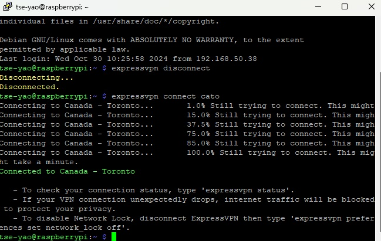
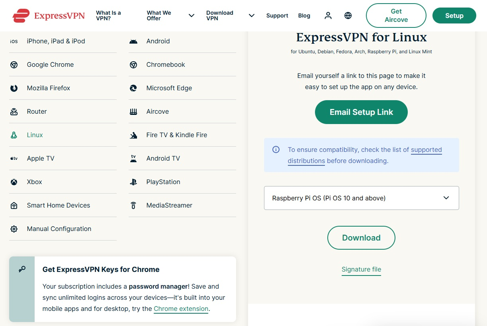
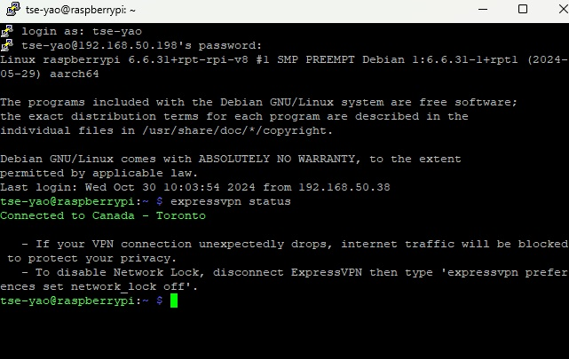

利用Raspberry Pi設置軟路由(以Express VPN為例)

雖然以前小弟就有用過用軟路由的方式，讓apple tv可以藉由VPN的方式，觀看國外的節目。國外的很多節目因為授權區域的緣故，必須去防止使用在該國/該區域以外的Ip位置的裝置觀看。但是由於許多體育節目只有國外才有，例如板球，最俗又大碗的選擇就是Willow TV，但是你就必須使用美國或加拿大的IP，才能觀看。不過後來由於向亞馬遜的Fire Stick以及Apple TV相繼都可以安裝VPN服務商的app，因此想要看國外有授權限制的節目，只要先執行Apple TV上的VPN服務商的app，就可以輕易地解決問題。
只是Apple TV上的VPN服務商的app都不太穩，雖然也可以使用Smart DNS的方式來解決，但是由於小弟想要節省Smart DNS的費用(就是想省錢)，也因此又重回到軟路由的懷抱。只是之前製作的軟路由是Nordvpn，而且製作過程複雜，而且小弟現在是使用Express vpn，所以我又重新搜尋了一下用Express vpn製作軟路由的方法，後來發現用Express vpn的方式更簡單，因此就把大概的重點分享改大家了。
原則上還是要準備一張SD card，用Raspberry Pi官方燒入軟體把Raspberry Pi的OS燒入SD card，操作基本上非常的無腦，甚至連SSH、wifi連線都可以事先預設好然後燒入SD Card，只是小弟建議還是以有線網路連線比較好。主機原則上RPi3以上應該都可跑得很順了，但這次小弟剛好多了一台空的RPi4，所以我就用RPi4來做一台軟路由了。
當開機完成之後，要先訂定網路規則，請執行以下三行指令。
sudo iptables -t nat -A POSTROUTING -o tun0 -j MASQUERADE
sudo iptables -A FORWARD -i tun0 -o eth0 -m state --state RELATED,ESTABLISHED -j ACCEPT
sudo iptables -A FORWARD -i eth0 -o tun0 -j ACCEPT
若無法執行，可能是因為OS內還沒有iptables這個軟體，所以請輸入以下兩行指令安裝。
sudo apt-get install iptables
sudo apt-get install iptables-persistent
安裝完成之後，請先至Express VPN的官網下載linux版本的安裝檔。下載完成後，請輸入以下指令安裝(本次是以安裝檔在Home或是Home/你登入帳號的名稱的目錄下前提) 。
sudo dpkg -i expressvpn_3.76.0.4-1_armhf.deb
安裝完成之後，要輸入啟動碼activate，請先輸入以下指令。
expressvpn activate

啟動碼應該在你的Express VPN的Dashboard上都可以找的到，輸入完成後，你就可以正式在你的Raspberry Pi上使用/建立VPN連線了。 以下是幾個簡單且常用的指令
列出VPN伺服器
expressvpn list
建立VPN連線，後面的代碼為伺服器所在地的代碼，例如加拿大的多倫多，代碼就是cato
expressvpn connect cato
若要中斷連線就執行以下指令
expressvpn disconnect
要查看連線狀態就執行以下指令
expressvpn status

接下來就是在Apple TV上的設定了，首先要知道RPi4的IP位置，IP位置可以用以下指令找出。
hostname -I
再來就是在Apple TV上的設定了，簡單來說就是手動將Apple TV上路由的ip位置，改成你的軟路由器的ip位置，DNS則是可以選擇8.8.8.8或是1.1.1.1，基本上就完成了。
延伸閱讀:
ExpressVPN on Raspberry Pi: The Ultimate GuideHow to Set Up NordVPN on the Raspberry Pi
SiriusXM-美國在線廣播和播客平台[Raspberry_Pi]使用樹莓派，做一個具有VPN功能的無線網路Repeater
另外，美國購物代運可參考:
https://a1253247.blogspot.com/p/hopshopgo-vs-spexeshop.html
對板球有興趣的可參考:
https://a1253247.blogspot.com/2022/05/cricket-line-written-by-admin-24-10.html
對生活飲食有興趣，可參考:
#PLEX